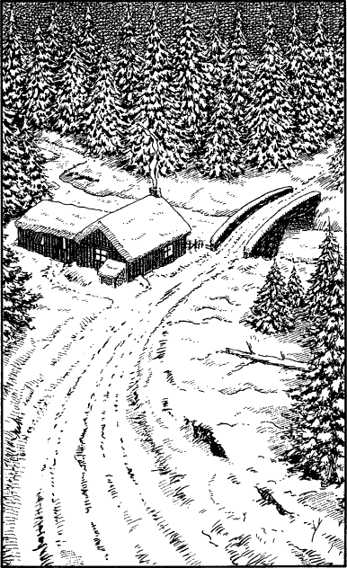

230
As you ride along this road of frozen earth, the sky begins to darken ominously and the weather closes in. What begins as a light flurry of snow soon deteriorates into an icy squall which cuts through you like a knife. Your Magnakai skills protect you from the cold, but Captain Prarg is not so fortunate. He utters not a word of complaint but you can sense that he is in great discomfort. Moreover, your horse, already tired from the exertions of the escape, is greatly weakened by the icy winds. Eventually it can carry you no further and you are forced to halt and dismount.
Your Kai senses warn you that enemy cavalry are in pursuit. You are a few miles ahead of them but their mounts are fresh and the distance between you is shrinking rapidly. You are about to suggest to Prarg that you abandon the horse altogether and seek shelter in the surrounding forest, when suddenly there is a lull in the storm and the falling snow thins out to reveal an unexpected sight.

You have stopped near the crest of a hill. Below you the forest road descends to a stone bridge which crosses a frozen stream. A rough log cabin stands beside this bridge, and a thin trail of wood smoke rises from its crooked chimney indicating that it is occupied. At the rear you see stables and at once you sense the presence of horses.
If you wish to approach the cabin and attempt to take a fresh mount from the stables, turn to 52.
If you choose to abandon your exhausted horse and take to the forest on foot, turn to 319.